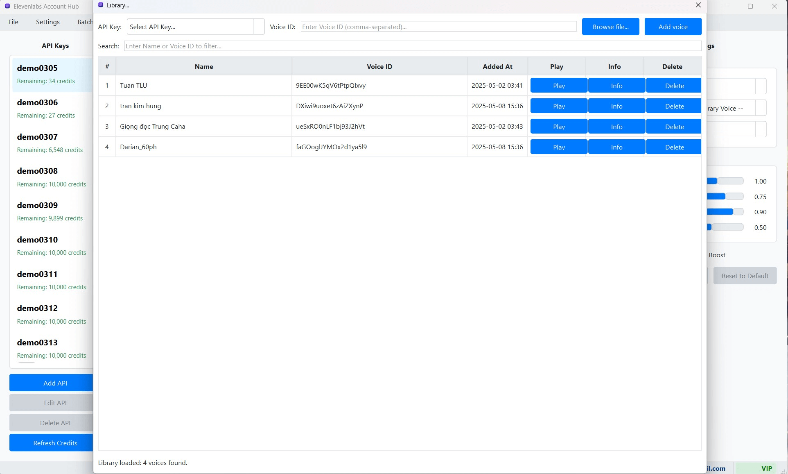

Khám phá Thư viện Giọng nói (Voice Library)
Ngoài các giọng nói tùy chỉnh mà bạn tự tạo hoặc nhân bản trong "My Voices", ElevenLabs Account Hub còn cung cấp cho bạn quyền truy cập vào "Voice Library" – một thư viện phong phú các giọng nói chất lượng cao do ElevenLabs tuyển chọn và cộng đồng người dùng đóng góp. Bạn có thể khám phá, nghe thử và thêm các giọng nói này vào bộ sưu tập cá nhân của mình để sử dụng trong các dự án TTS, tất cả đều được thực hiện ngay trong giao diện của phần mềm.
1. Mở Cửa sổ "Voice Library"
Để bắt đầu khám phá thư viện giọng nói công cộng của ElevenLabs:
- Trên Thanh Menu của cửa sổ chính, chọn "Voices Library".
- Từ menu con xổ xuống, chọn "Library".
Cửa sổ "Thư viện Giọng nói ElevenLabs" (ElevenLabs Voice Library) sẽ xuất hiện. Cửa sổ này được thiết kế để hiển thị các giọng nói dưới dạng các thẻ (card) trực quan, giúp bạn dễ dàng duyệt qua.
 (Hình ảnh: Giao diện tổng quan của cửa sổ "Voice Library" hiển thị các giọng nói)2. Các Chức năng trong Cửa sổ "Voice Library"
a. Tải và Hiển thị Danh sách Giọng nói
- Yêu cầu Khóa API: Khi cửa sổ "Voice Library" được mở, phần mềm sẽ tự động sử dụng một trong các Khóa API ElevenLabs đang hoạt động của bạn (thường là khóa API được chọn gần nhất hoặc một khóa mặc định) để kết nối đến máy chủ của ElevenLabs và tải về danh sách các giọng nói có sẵn trong thư viện công cộng.
- Hiển thị Dạng Thẻ (Card View): Danh sách các giọng nói thường được hiển thị dưới dạng các thẻ (card) riêng biệt. Mỗi thẻ cung cấp thông tin tóm tắt về một giọng nói, bao gồm:
- Tên Giọng nói (Voice Name): Tên của giọng nói.
- Mô tả ngắn (Description): Một đoạn mô tả ngắn về đặc điểm hoặc trường hợp sử dụng của giọng nói.
- Nhãn (Labels/Tags): Các nhãn giúp phân loại giọng nói, ví dụ:
accent: american,age: young,gender: female,use case: narration,description: calm. - Nút Nghe thử (Play Sample): Cho phép bạn nghe một đoạn âm thanh mẫu của giọng nói đó để đánh giá chất lượng và phong cách.
- Nút "Thêm vào My Voices" (Add to My Voices): Nếu giọng nói này chưa có trong danh sách "My Voices" của tài khoản ElevenLabs (liên kết với Khóa API đang dùng để tải thư viện), nút này sẽ cho phép bạn thêm nó vào. Sau khi thêm thành công, nút này có thể chuyển thành "Đã thêm" (Added) hoặc bị vô hiệu hóa.
- Nút "Thêm vào Thư viện Cục bộ" (Add to Local Library): Cho phép bạn lưu thông tin của giọng nói này (ID, tên, mô tả, nhãn) vào cơ sở dữ liệu cục bộ của phần mềm ElevenLabs Account Hub. Điều này giúp bạn dễ dàng truy cập và sử dụng giọng nói này sau này thông qua danh sách "Library Voice" trong Bảng Cài đặt TTS, ngay cả khi nó không nằm trong "My Voices" trên máy chủ ElevenLabs.
b. Tìm kiếm và Lọc Giọng nói (Tính năng Dự kiến/Nâng cao)
Trong các phiên bản nâng cao hoặc tương lai, cửa sổ "Voice Library" có thể được trang bị các công cụ tìm kiếm và bộ lọc mạnh mẽ hơn, cho phép bạn:
- Tìm kiếm giọng nói theo tên.
- Lọc giọng nói dựa trên các nhãn (ví dụ: chỉ hiển thị giọng nam, giọng có accent Anh, giọng phù hợp cho kể chuyện).
- Sắp xếp danh sách giọng nói theo các tiêu chí khác nhau (ví dụ: mới nhất, phổ biến nhất).
c. Nghe Thử Giọng nói (Play Sample)
Trước khi quyết định sử dụng hoặc thêm một giọng nói vào bộ sưu tập của mình, bạn nên nghe thử mẫu âm thanh của nó. Nhấn vào nút phát trên thẻ của một giọng nói. Một đoạn âm thanh mẫu sẽ được phát, giúp bạn đánh giá chất lượng, ngữ điệu, và phong cách của giọng nói đó.
d. Thêm Giọng nói vào "My Voices" trên Máy chủ ElevenLabs
Nếu bạn tìm thấy một giọng nói trong thư viện công cộng mà bạn muốn đưa vào danh sách giọng nói tùy chỉnh ("VoiceLab") của tài khoản ElevenLabs của mình (để dễ quản lý trên trang web ElevenLabs hoặc sử dụng trong các ứng dụng khác), bạn có thể:
- Tìm giọng nói bạn thích trong cửa sổ "Voice Library".
- Nếu nút "Thêm vào My Voices" khả dụng (tức là giọng nói đó chưa có trong "My Voices" của bạn và tài khoản của bạn còn chỗ trống), hãy nhấn vào đó.
- Phần mềm sẽ gửi yêu cầu đến API của ElevenLabs để thêm giọng nói này vào "My Voices" của tài khoản ElevenLabs đang được sử dụng để duyệt thư viện.
- Sau khi thêm thành công, nút có thể chuyển thành "Đã thêm" hoặc một chỉ báo tương tự.
e. Thêm Giọng nói vào Thư viện Cục bộ của Phần mềm
Đây là một tính năng rất hữu ích của ElevenLabs Account Hub, cho phép bạn "đánh dấu" các giọng nói yêu thích từ thư viện công cộng và lưu thông tin của chúng vào cơ sở dữ liệu cục bộ của phần mềm, mà không cần phải thêm chúng vào "My Voices" trên máy chủ ElevenLabs (giúp tiết kiệm "slot" trong VoiceLab của bạn).
- Tìm giọng nói bạn muốn lưu lại thông tin trong cửa sổ "Voice Library".
- Nhấn nút "Thêm vào Thư viện Cục bộ" (hoặc một biểu tượng tương tự như "Lưu vào Local").
- Thông tin cơ bản của giọng nói này (bao gồm Voice ID, tên, mô tả, nhãn) sẽ được lưu vào cơ sở dữ liệu của ElevenLabs Account Hub trên máy tính của bạn.
- Sau này, khi bạn muốn sử dụng giọng nói này để tạo TTS, bạn có thể dễ dàng chọn nó từ danh sách thả xuống "Library Voice" trong Bảng Cài đặt TTS (Cột Phải). Xem thêm chi tiết tại Sử dụng Giọng nói từ Thư viện Cục bộ khi Tạo TTS.
Lưu ý Quan trọng khi Sử dụng Voice Library
- Yêu cầu Khóa API Hoạt động: Để tải danh sách giọng nói từ thư viện công cộng và để thêm giọng nói vào "My Voices" trên ElevenLabs, phần mềm cần sử dụng một Khóa API ElevenLabs đang hoạt động và có đủ quyền.
- Giới hạn của Gói Tài khoản ElevenLabs: Khả năng thêm giọng nói từ thư viện vào "My Voices" trên máy chủ ElevenLabs của bạn phụ thuộc vào giới hạn của gói tài khoản ElevenLabs bạn đang dùng (ví dụ: Free, Starter, Creator, Pro).
- Sự khác biệt giữa "My Voices" (trên ElevenLabs) và "Thư viện Cục bộ" (trong phần mềm):
- "My Voices" (VoiceLab trên ElevenLabs): Là danh sách các giọng nói tùy chỉnh (bao gồm cả giọng bạn tự nhân bản và giọng bạn thêm từ thư viện) được lưu trữ trực tiếp trên máy chủ của ElevenLabs và liên kết với tài khoản ElevenLabs của bạn. Chúng có thể được truy cập từ bất kỳ đâu nếu bạn đăng nhập vào tài khoản ElevenLabs.
- "Thư viện Cục bộ" (Local Library trong ElevenLabs Account Hub): Là một bản sao thông tin (ID, tên, mô tả, nhãn) của các giọng nói (có thể từ thư viện công cộng hoặc từ "My Voices" của bạn) được lưu trong cơ sở dữ liệu của phần mềm ElevenLabs Account Hub trên máy tính của bạn. Việc này giúp bạn dễ dàng chọn lựa và sử dụng các giọng nói này khi tạo TTS thông qua phần mềm mà không nhất thiết phải thêm tất cả chúng vào "My Voices" trên máy chủ ElevenLabs, đặc biệt hữu ích nếu "My Voices" của bạn đã đầy.
- Cập nhật Thư viện: Danh sách giọng nói trong thư viện công cộng của ElevenLabs có thể thay đổi theo thời gian. Bạn có thể cần làm mới (refresh) cửa sổ "Voice Library" trong phần mềm để xem các cập nhật mới nhất.